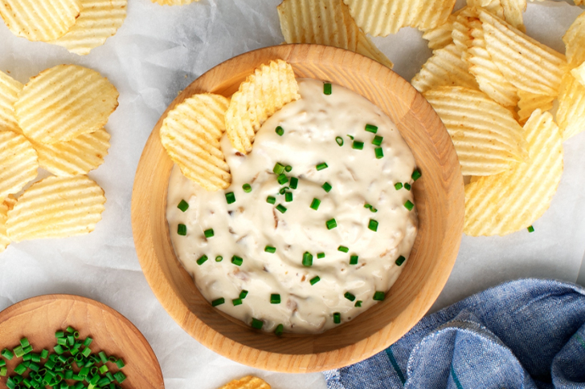
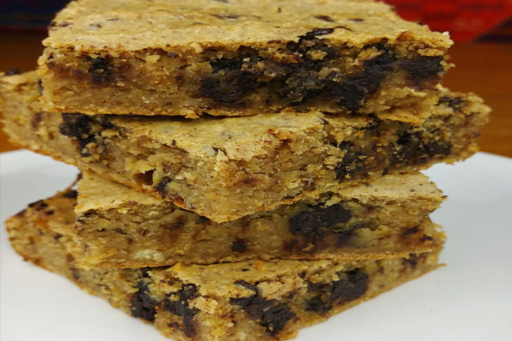

ジャンクフードを一手間でグンと健康的にする方法14選
私たちは健康的な食事が大切なことを知っていますが、たまにはジャンクフードを食べたいですよね。そこで少しでも罪悪感を減らすために、家庭で作れるジャンクフードをまとめました！本記事で紹介している食品は、一部果物や全粒穀物で代用できます。

チリチーズのナチョス
ナチョスに唐辛子を乗せればそれだけでヘルシーなディナーです。加えてスライスしたネギ、アボカド、トマト、サワークリームを乗せれば満腹感は抜群でしょう。
オニオンカレーのディップ
キャラメリゼしたオニオンとカレーのディップならオニオンスープミックスディップよりも健康的です。お気に入りのチップスやクルディテと一緒に食べましょう、
パルメザンズッキーニフライ
ズッキーニのフライとフライドポテトを1つにまとめたもので、とてもヘルシーな料理です。ハンバーガー、チキン、ピザの前菜やおかずになりますし、子どもが多くの野菜を食べるきっかけにもなります。
手作りオニオンリング
オニオンリングはパン粉だけでは物足りません。そのため適当な調味料や小さじ1杯の塩を振りかけます。また、一部のスーパーでは味付けしたパン粉が売っているのでおすすめです。
パースニップ
フライドポテトをパースニップに置き換えると、1食あたり5グラムの食物繊維が追加で摂れます。その後マヨネーズをシラチャかローストガーリック、もしくはその両方と混ぜてアイオリを作れば、栄養価の高いポテトと一緒に食べられます。
焼いたバッファローウィング
焼きバッファローチキンウィングは手羽先の揚げ物に比べて138カロリー＆598ミリグラムの塩を削減できます。スティック野菜を隣に加えれば、ヘルシーさも倍増です！
チキンバーベキューピザ
チキンバーベキューピザをもっと良いものにしたいなら、マヨネーズと小量の酢で作ったホワイトソースを加えましょう。もちろん市販のピザにも使用できます。
グリルしたタコスピザ
グリルピザにタコスのトッピングを加えると、簡単にタコスピザが作れます。お気に入りの材料を使えるうえ簡単なのでおすすめです。
スタンダードなハンバーガー
クラシックなハンバーガーに使われるソースは簡単に作成できます。マヨネーズ、ケチャップ、レリッシュ、酢を合わせてみましょう。サツマイモのフライドポテトと合わせれば、ヘルシーなハンバーガーの完成です。
アーモンドバター（キノアブロンディ）
キノア粉を使用すれば、さらにヘルシーなアーモンドバターを作れます。キレイなコーヒーグラインダーを使って新鮮なキノアを粉砕し、オリジナルキノア粉を作成しましょう。

アボカドを使ったチョコレートシェイク
クリーミーなのに乳製品を使わないチョコレートシェイクを作るには、アボカドを使います。ただし、乳製品にアレルギーがないなら、低脂肪ミルクやほろ苦いチョコレートチップに置き換えられます。
チョコレートとピーナッツのクラスター
45分で作れる甘くてサクサクしたスナックは、作ろうと思えばすぐに作れてしまいます。そのため、あらかじめ2倍の量で作りましょう。食べきれない分は冷凍庫で最大3ヶ月保管できるので、時間の節約になります。
とうもろこしのチーズディップ
トウモロコシと温かいチェダーチーズのディップは、トーストしたパンと一緒に食べると美味しいです。

安価なアーティチョークディップ
クリーミーかつ安価で作れるディップは、ほうれん草のアーティチョークのディップにひねりを加えたものです。クリームチーズの一部をヨーグルトで代用すれば、さらに健康的になりますね。トルティーヤチップスや野菜スティックで食べましょう！